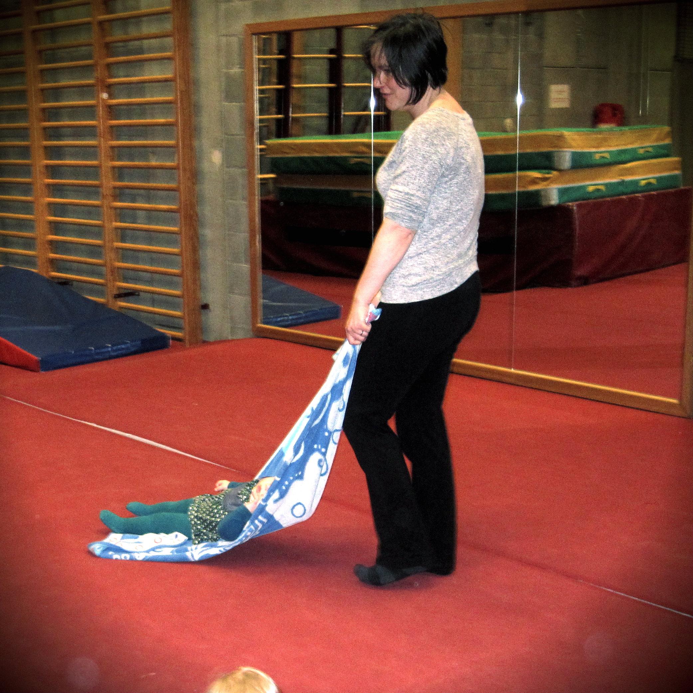

Sherborne & Peutertijd

Sherborne Bewegingspedagogiek of kortweg Sherborne is een bewegingsmethode.
Wat Sherborne inhoudt en wat het met jou en je (klein-)kind kan doen, is eigenlijk niet in woorden uit te leggen. Je moet het echt ervaren om er een volledig beeld van te krijgen... Sherborne bewegingspedagogie werd vernoemd naar haar grondlegster, Veronica Sherborne. Veronica Sherborne (1922 - 1991) was een Engelse licentiate lichamelijk opvoeding, kinesitherapie en moeder van drie kinderen. Vanuit haar kennis als leerkracht/therapeute, de observatie van haar eigen kinderen en bewegingsanalyse ontwikkelde ze haar methode in een diversiteit van situaties en deelnemers. Zo gebruikte ze de methode zelf bij haar kinderen, in kleuter- en lager onderwijs en bij kinderen met psychische en/of motorische problemen. Ze werkte daarvoor onder meer samen met studenten lichamelijke opvoeding, leerkrachten, ouders, verzorgers en therapeuten. Ze was meer dan 25 jaar bezig met het optimaliseren van haar methode en intussen wordt deze wereldwijd toegepast. Ook bij ons wordt sherborne gebruikt in vele contexten: van scholen tot dagcentra, bij kinderen en volwassenen met of zonder beperking.
In het Sherborne bewegingsprogramma ligt de nadruk op sociale, affectieve en emotionele doelen. Motorische vaardigheden komen pas op de tweede plaats. De twee basisdoelen zijn :
Zelfvertrouwen en vertrouwen (in de omgeving en de ander) staan hierbij centraal.
Het groeien van zelfvertrouwen gebeurt doorheen de vele bewegingsspelen die gericht zijn op de ontwikkeling van het lichaamsbewustzijn.
Het vertrouwen in de ander groeit vanuit de bekwaamheid om met anderen om te gaan en te communiceren.
Dit wordt geoefend in de verschillende relatiespelen.
De ervaring, het uitvoeren en het aan den lijve ondervinden, zijn een must om de methode te leren kennen.
Meer info op www.sherborne.be.
We werken in aangename, kleine groepjes van 5 tot 10 deelnemers zodat er voor elke deelnemer voldoende aandacht is. Uiteraard zijn de groepjes voor baby’s kleiner dan die voor kleuters. Ook de tijdsduur wisselt ifv de leeftijd. De lessen voor baby’s en peuters duren 45 minuten, voor kleuters is dit 60 minuten. We doen bewegingsspelletjes waarbij we soms per twee (begeleider + kind), maar ook soms individueel werken. Zo ontdekken de kindjes spelenderwijs wat hun lichaam allemaal kan. We zullen actief zijn (rollen, kruipen, rennen, paardjerijden) maar bouwen ook rustige periodes in, waarbij er aandacht is voor relaxatie, massage, een moment om tot rust te komen.
We hebben als (groot)ouder de reflex om voor ons kind te zorgen. In de sessies wordt er ook ruimte gemaakt om de rollen eens om te draaien. De kinderen zullen de begeleider dus ook helpen met bepaalde oefeningen en zorgaspecten (bvb massage) op hen nemen. Dit zorgt ervoor dat de band tussen (groot)ouder en kind ten volle geëxploreerd en verdiept kan worden. Tijdens de sessies is er steeds aandacht voor de mogelijkheden en de wensen van elk kind. Het is belangrijk dat je als begeleider kijkt naar je kind en rekening houdt met wat hij/zij kan en wil. Merk je als begeleider dat je kindje iets (nog) niet wil of kan? Of hebben de kindjes meer behoefte aan actie of rust? Dan passen we de oefeningen aan! Tijdens een lessenreeks vinden we het ook belangrijk om veel te herhalen. Dit wil niet zeggen dat alle lessen identiek zijn aan elkaar, maar er zullen wel veel oefeningen zijn die de kinderen zullen herkennen uit een vorige les. Kleine kinderen houden van herkenbaarheid en voorspelbaarheid. Herhaling geeft hen zekerheid die nodig is om te kunnen groeien. Uiteraard worden er ook nieuwe oefeningen aangeboden, zodat de kinderen ook nieuwe ervaringen opdoen en zich uitgedaagd blijven voelen. Op het einde van de les hebben we een rustmomentje. Bij de lessen van 45 minuten is het mogelijk om nog een kwartiertje na te praten en rustig de schoentjes en het jasje aan te doen.
Wil je even tijd maken om bewust met je (klein)kind bezig te zijn? Heeft je kleinkind nood aan meer spelelementen dan dat er in een klassieke Sherborne-les zitten? Kom dan zeker onze sessies peutertijd eens proberen. We mixen muziek,beweging, relaxatie en Sherborne tot een peutervriendelijk uurtje. Ook papa's en opa's zijn zeker welkom! De lessen duren 45 minuten en erna kan nog even rustig gebabbeld worden. Elke les werken we rond een bepaald thema (dieren, kleuren, voertuigen,...) en zijn de spelletjes en muziek aangepast aan het thema. Er is ook super leuk materiaal waar we vanalles mee zullen doen: parachute, grote blokken, matten, hoepels,.... Aangezien de kindjes nog klein zijn, staat er niks "vast". Zijn er dingen die je kindje niet graag doet, of heeft het meer interesse in de spiegels die in de zaal hangen? Geen probleem, laat het dan rustig zijn gang gaan. Het belangrijkste is dat jullie een leuk moment hebben samen. Natuurlijk worden er oefeningen aangereikt en wanneer ik zie dat je kindje iets niet zo leuk vindt, zal ik zeker alternatieven aanbieden, maar lukt het echt niet of wil je kindje even rust, dan kan dat gewoon. Jullie pikken dan nadien wel weer in bij een volgend item. Is je kindje ietsje jonger of ouder, maar zou je toch graag deelnemen? Geef ons dan gerust een seintje, dan bekijken we samen of je kindje zich goed zou kunnen voelen in de groep.